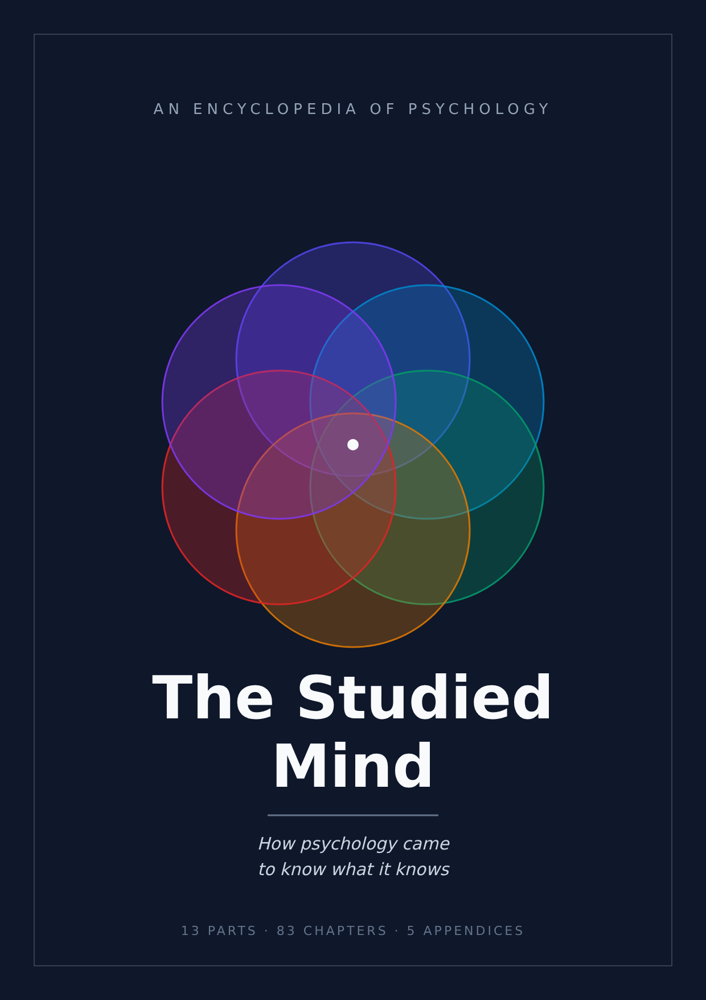

The Studied Mind
How psychology came to know what it knows
Start readingPart I. The problem of knowing the mind
Part II. The mind as depth: the psychoanalytic tradition
- Chapter 7 — Before psychology: the mind as a philosophical object
- Chapter 8 — The hypothesis of the unconscious
- Chapter 9 — The dream work
- Chapter 10 — Repression, defenses, the return of the repressed
- Chapter 11 — Drives, repetition, aggression
- Chapter 12 — Delusion as a construction with a grain of truth
- Chapter 13 — What holds up in psychoanalysis
Part III. The mind as behavior: the behaviorist program
Part IV. The substrate: nervous system and behavior
- Chapter 20 — The neuron as a signaling unit
- Chapter 21 — The synapse
- Chapter 22 — Neurotransmitters and psychopharmacology
- Chapter 23 — Architecture of the brain
- Chapter 24 — How to look inside a working brain
- Chapter 25 — Plasticity
- Chapter 26 — Sleep and circadian rhythms
- Chapter 27 — Genes, environment and their interaction
Part V. Perception and attention
Part VI. Memory and learning
Part VII. Cognition, reasoning, systematic errors
Part VIII. Emotion and motivation
Part IX. Development
- Chapter 54 — Studying a subject who cannot speak
- Chapter 55 — The competent newborn
- Chapter 56 — Stages of cognitive development
- Chapter 57 — Attachment
- Chapter 58 — Theory of mind and developing social cognition
- Chapter 59 — Developing language
- Chapter 60 — Adolescence and trajectories across the lifespan
Part X. Personality and individual differences
Part XI. Social psychology
Part XII. Psychological suffering as a test bench
Part XIII. The three questions that remain
- Chapter 78 — Consciousness: why it is a problem and not just a puzzle to be solved
- Chapter 79 — What experiments on consciousness measure
- Chapter 80 — Free will: what the data say
- Chapter 81 — Responsibility without free will?
- Chapter 82 — Personal identity over time
- Chapter 83 — What psychology knows, what it thinks it knows, what it does not know